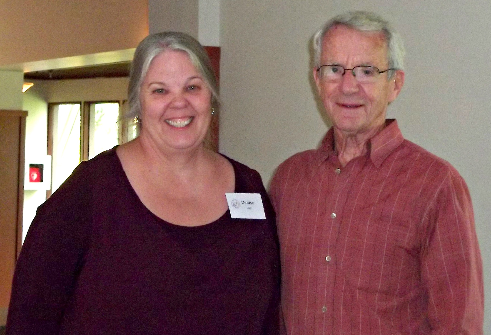

Spiritual Care . . . the Ministry of Presence
So often people living with a physical and/or developmental disability are left wondering about their own worth and value. They find themselves facing losses and isolation that most say cause far more suffering than does their actual disability. Many feel that not only are they not welcome in their communities, but they feel like strangers even in their own churches. Responding to the need to alleviate isolation and rejection is the mission of our Spiritual Care Ministry.
Bridge builds programs and relationships to serve:
-
Adults and families living with physical and/or developmental disabilities
-
Church communities intentional about being inclusive
-
Businesses and other agencies interested in disability concerns
Through inclusion, people can begin to feel hopeful, affirmed and valued, able to appreciate their own God-given gifts and share them with others.

For more information about Spiritual Care, contact:
Denise Aanenson at (425) 885-1006 ext 107, or by email.